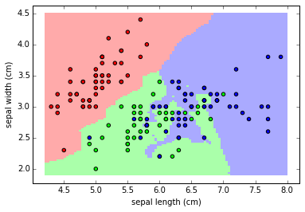

ML Crashcourse Index
UO Data Science
Winter 2018
1 Index
- What Is Machine Learning?
2 What is Machine Learning?
2.1 A Broad Definition…
Machine learning is an approach to making accurate predictions using experience (ie. prior information). The methods that arise from this approach attempt to algorithmically fit some function relating some “input” values to some “output” values such that the function accurately predicts future outputs from future inputs.
Or, the goal is to determine the relationship between thing a (or things a1, …, an) and thing b (or things b1, …, bn) even when that relationship is arbitrarily complex.
Once more, according to Vapnik “the learning process is a process of choosing an appropriate function from a given set of functions.”
For example, linear regression works great when the relationship is linear, but poorly when it looks like this…

If the only class of functions you were considering were lines of different slopes, you would fail to characterize the relationship between the three variables (time, fox, and rabbit populations). Machine learning is a generalization of the linear/parametric statistical problems you are likely familiar with.
Our learning machines have two basic requirements:
- To estimate our function from a wide variety of functions – roughly, we want to be able to estimate the relationship no matter how complicated it might be.
- To estimate our function using a limited number of examples.
2.2 Major Classes of ML Problems
- Classification/Pattern Recognition
Given a set of observations, learn a generalizable rule that allows their discrete class to be predicted. For example, we see a series of animals with either two or four legs who do or don’t bark. We want to learn to categorize animals with two legs as humans, animals with four legs who don’t bark as cats and animals with four legs who do bark as dogs. We want to partition the input space.

- Regression
Given a set of observations, learn a generalizable relationship that allows some real-valued output to be predicted. For example, we want to estimate a likely temperature after seeing a series of temperatures, times, humidities, air pressures, etc.

- Density Estimation
Given a set of observations, we want to describe the probability distribution of the underlying population. The most commonly associated machine learning methods are those of cluster analysis, which seek to characterize the structure of data without knowing about category membership in advance – things that share a probability distribution are more likely to be from the same phenomenon than those that do not.
2.3 A Brief History…
(taken largely from Ch. 1 of Vapnik’s Statistical Learning Theory)
The parametric approach of the 1920-30’s - The classical, maximum likelihood methods developed largely by Fisher in the 1920’s pose the problem of statistical inference as 1) assuming the structure of the process that generated observed values – eg. the assumption of normality – in order to 2) estimate the parameters of a predefined function. This parametric method of inference works well when 1) the laws that generate the random error of observation and 2) the form of the function whose parameters are to be estimated are both known in advance. The number of problems that satisfy those two conditions are very few indeed. This approach reached its “golden age” from 1930-1960, but remains in common currency in some part by historical accident (its alternative was developed by the Russians during the Cold War) and in some part by many scientists being unwilling to give half an ass to learn math.
Empirical Risk Minimization in the 1960’s - It is easy to forget that many of the classical methods were developed without computers, and evaluating complex datasets was laborious such that it neared impossibility. When we got our hands on our computers it became clear that the ideas that underlie the parametric approach to inference were naive, however convenient. It is from this realization that the practice of “data analysis” that seeks to describe data rather than make formal statistical inductions followed. The development of the perceptron, which mimics very crude neurons that update input “weights” depending on repeated input to estimate category labels prompted the development of Emperical Risk Minimization. The ERM principle suggests that functions that generalize well to future inputs, ie. functions that describe the input/output relationship well, should be trained by minimizing the observed error (risk) on training examples. The major intellectual developments that followed were the description of the conditions for consistency of ERM – when ERM will arrive at the best possible solution – and the quality of the functions fit by ERM.
Backpropagation in the 1980’s - This practice remained unpopular due to the limitations of perceptions and related learning algorithms, but the development of backpropagation that allowed multiple instances of a learning algorithm to be chained together renewed interest. Backpropagation allows the observed error at the output of a chain of stacked algorithms to be… propagated… backwards… through to the input, so that all weights or parameters of the function estimator can be intelligibly updated rather than just those of the output.
Deep Learning in the 2000’s - Backpropagation is great, but computationally expensive. The advent of cheap GPUs that allow the matrix algebra necessary for deep algorithms to be performed in a tractable period of time.
From this history we can see the major components of the machine learning approach:
Models are evaluated by a loss value: the difference between the correct answer and the predicted answer
Models are improved by updating their parameters to minimize that loss value
Multiple models, or units of models, are combined so increase the generality of the functions that can be estimated.
Models are tested by their ability to generalize to novel data, or by ‘cross-validation’
2.4 Common ML Algorithms
Good god there are so many. The folks that put together scikit-learn for Python made this flowchart that gives a very high-level overview of the major types

2.4.1 Decision Trees
For this I defer to this lovely presentation: http://www.r2d3.us/visual-intro-to-machine-learning-part-1/
2.4.2 Support Vector Machines
In the simplest example, we learn some line, plane, or hyperplane that best separates classes.

2.4.3 Artificial Neural Networks
Models are composed of neurons, arranged in layers, with particular connectivity between (or within) layers. Neurons can be arbitrarily complex, from the simplest weight-only neuron to the hypercomplex LSTM neurons. Models also get their power from their architecture, as exemplified convolutional neural networks.


And of course we have to deep dream a little bit
2.4.4 k-Means Clustering
Divide data into k clusters such that each observation is identified as the cluster with the nearest mean value. One of the simplest clustering algorithms.

2.5 Resources
3 Regularized Regression in Caret
This is intended to provide a (very brief) introduction to some key concepts in Machine Learning/Predictive Modeling, and how they work within a regression context. Regularized regression is a nice place for folks with a psych background to start, because its an extension of the familiar regression models we’ve all come to know and love.
Regression models, of course, are used when you have a continuous outcome. So many of our problems in psych involve continuous outcomes (e.g., personality dimensions, emotions/affect, etc.), and so regression models are pretty useful for psychologists.
But, before we dive into regularized regression, we should first cover some basic concepts in machine learning.
3.1 The Bias-Variance Tradeoff, Overfitting, and Cross-Validation
3.1.1 Bias-Variance Tradeoff
This came up briefly last week, but the bias-variance tradeoff is really crucial to everything we’ll talk about today. The basic idea is that you can partition error into two components: bias and variance. Bias refers to the extent to which a model produces parameter estimates that miss in a particular direction (e.g., consistently over-estimating or consistently under-estimating a parameter value). Variance refers to the extent to which a model produces parameter estimates that vary from their central tendency across different datasets.
There is a tradeoff between bias and variance: all else equal, increasing bias will decrease variance. The basic idea here is that if we have a zero-bias estimator, it will tend to try to fit everything in the data, whereas an estimator biased in some direction won’t. This isn’t to say that bias is good or bad, just that there are times where we might want to increase bias to decrease variance. As we’ll see later, regularization is basically one method for introducing bias (to minimize variance).
3.1.2 Overfitting
This is probably familiar to folks in here (and it came up last week), so I won’t say much about it here. The basic idea is that any data has signal and noise. Sometimes, something appears to be signal but is actually noise. That is, when our statistical models are searching for the best solution, they sometimes will be fooled into thinking some noise is signal. This is usually called overfitting, and it has presented a pretty substantial problem in statistical modeling. As you’ll see, one of our goals is to try to avoid overfitting. Also worth noting is that overfitting will tend to produce a model with high variance, because noise will vary from dataset to dataset (basically by definition), and so a model which has fit noise will not do well across different datasets (with different noise).
3.1.3 Cross-Validation
Cross-validation generally refers to taking a model that you trained on some data and using it in a new dataset. Unlike a replication, the model parameters carry over from the training to the test data (i.e., you don’t simply use the same variables and re-estimate the model parameters; you save the model parameters, and use it to predict the outcome variable). You can use cross-validation both to train and evaluate a model. A simple example may make this clear.
Let’s say we think home size (in square-feet) is the only relevant predictor for house price. So, we have some data on prices of recently sold houses, and estimate a model predicting house price from square-feet:
\[\hat{price_{i}} = b_0 + b_1*sqaurefeet_i\]
Let’s say we get these parameter values:
\[\hat{price_{i}} = 100 + 50*sqaurefeet_i\]
And now we want to cross-validate in a hold-out sample. We wouldn’t simply estimate this model again:
\[\hat{price_{i}} = b_0 + b_1*sqaurefeet_i\]
We would instead apply this model:
\[\hat{price_{i}} = 100 + 50*sqaurefeet\] And evaluate how well it did. We could do this either by how much it misses, which is usually done with root mean squared error (RMSE). This is the average squared difference between observed (\(y_i\)) and expected (\(\hat{y}_i\)) values:
\[MSE = \frac{1}{n}\sum\limits_{i=1}^{n}(y_i - \hat{y_{i}})^2\]
And in our example, the y variable is house price:
\[MSE = \frac{1}{n}\sum\limits_{i=1}^{n}(price_i - \hat{price_{i}})^2\] And then finally, we take the square root for RMSE:
\[RMSE = \sqrt{MSE}\]
Typically, people will also look at prediction accuracy, using the model’s \(R^2\). This is interpreted the same way as \(R^2\) always is (as the % of variance in the outcome accounted for by the model).
3.1.3.1 K-fold cross-validation
There are different varieties of cross-validation. The most intuitive version is to create a single partition of data (i.e., split full data frame into two dataframes: training and test). However, there are other methods for cross-validation. One that has been gaining steam (or is maybe already at full steam at this point) is k-fold cross-validation. The basic idea is that we split a dataset into k subsamples (called folds). We then treat one subsample as the holdout sample, train on the remaining subsamples, and cross-validate on the holdout sample; then rinse and repeat so to speak. An example will probably help here.
Let’s take a ridiculously simple example (based on the earlier example). We want to predict house sale price from square footage:
\[\hat{price_i} = b_0 + b_1*sqaurefeet_i\]
Let’s say we have just 30 cases, and we use 10-fold cross validation. Let each observation be indicated by \(o_i\), so the first observation is \(o_1\), the second is \(o_2\), and the third is \(o_3\), etc.
First, we would fit a model using folds 2 through 10 (i.e., \(o_4\) to \(o_30\)), and then test it on the first fold (\(o_1\) to \(o_3\)). Then, we would fit the model using folds 1 and 3-10 (i.e., \(o_1\) to \(o_3\) & \(o_7\) to \(o_30\)) and test it on the 2nd fold (\(o_4\), \(o_5\), \(o_6\)), and so on until each fold was used as the holdout sample.
Then, we calculate the average performance across all of the tests.
Note that you can also use k-fold cross-validation for training purposes. Basically, this works by taking the best fitting model from a k-fold cross-validation procedure, and then testing it on a new holdout sample.
3.2 Regularization
Now let’s get to regularized regression. This is a pretty simple extension of OLS regression. The logic of it is basically that OLS regression is minimally biased, but because of this, is higher variance than we might want. So, the solution is to introduce some bias into the model that will decrease variance. This takes the form of a new penalization, which tends to either be focused on parameter size, number of parameters, or both. Let’s start with the first. I find it helpful to think of these as having different beliefs, and choosing one depends on whether or not those beliefs seem correct.
3.3 Ridge: all of these features matter, but only a little bit.
Ridge regression is basically OLS regression with an extra term. As a refresher, OLS seeks to minimize the sum of squared error, or:
\[SSE = \sum\limits_{i=1}^n (y_i - \hat{y_i})^2\]
Ridge adds an additional penalty:
\[SSE_{L2} = \sum\limits_{i=1}^n (y_i - \hat{y_i}^2) + \lambda \sum\limits_{j=1}^p \beta^2_j\] This makes it so that paramter values are only allowed to be large if they reduce error enough to justify their size. Functionally, this makes it so parameter values shrink towards 0. You can hopefully see this in that as our paramater values (our betas) increase in size, error increases, since we are adding the sum of squared beta values, times some constant \(\lambda\), to our error term SSE. So, unless the parameter values decrease the first part of the error term (the ordinary sum of squared error; to the left of our new penalty) proportionally to their magnitude, they are shrunk toward 0.
The extent to which they are shrunk towards 0 depends on the value of \(\lambda\); higher values lead to more shrinkage than lower values. This is called a hyperparameter because it’s a parameter that governs other parameters. You can think of \(\lambda\) as sort of the cost associated with larger parameter values: higher values of lambda are like telling your model that larger parameter values are more costly (so don’t make them large for nothing).
You can think of this penalty as introducing a specific type of bias: bias towards smaller parameter values. However, since larger parameter values can result from overfitting, this bias can result in reducing variance.
So why does Ridge do that and why is it useful? As I said earlier, I find it useful to think of statistical tools as having certain beliefs, and as being useful when those beliefs seem more or less true (in some particular case). Ridge believes that all of the variables you’re considering matter, but that most of them matter very little. Put differently, it believes that each variable you’ve entered belongs in the model, but that most or all only have small contributions. Because of this, people often say that ridge doesn’t perform feature selection, and shouldn’t be used if you need to select features (i.e., variables). This makes sense once you think of what Ridge believes: it believes every variable you’re telling it to use should be in the model, but many will simply have small impacts. If we want to select features (i.e., decide what variables go in our model), we need a different tool with a different set of beliefs.
3.4 Lasso: only some features matter, and they might matter a lot
Another popular form of regularized regression is the least absolute shrinkage and selection operator model, or lasso. Unlike ridge, lasso’s regularization simultaneously performs feature selection and model improvement.
Just like ridge, lasso is essentially our old friend OLS regression with an extra term added to error, which penalizes non-zero parameter values:
\[SSE_{L1} = \sum\limits_{i=1}^n = (y_i - \hat{y_i}^2) + \lambda \sum\limits_{j=1}^p |\beta_j|\]
It’s sort of hard (at least for me) to have a strong intuition about why this simple change leads to a model that functions differently. But, the basic idea is that penalizing the absolute value leads to some parameters actually being set to zero; the idea (I think) is that penalizing the absolute value leads to small departures from zero (e.g., .1) to be relatively more penalized than when you’re penalizing the squared value (since squaring a value < 1 leads to a smaller value than its absolute value). This is most consequential for correlated predictors: Ridge will allow each of k correlated predictors to basically share the predictive duty, whereas Lasso will tend to pick the best and ignore the rest. SO, just like with ridge, lasso introduces bias, and its bias is that many predictors will have no relation to the outcome variable (i.e., only some features matter).
Let’s walk through an example with correlated predictors that I think will help. Let’s say we have an outcome \(Y\), and two predictors \(X_1\) and \(X_2\). And let’s imagine \(X_1\) and \(X_2\) are highly correlated (\(r_{X_1, X_2} = .90\)). Let’s say a model (Model 1) that contains predictors gives us this solution:
\[Model 1: y_i = .40*X_1 + .40*X_2\] According to the path algebra, including just one of these predictors, \(X_1\), in the model would give us the following:
\[Model 2: y_i = .76*X_1\]
Note, this is just the path from \(X_2\) to \(Y\) (.40) times the correlation between \(X_1\) and \(X_2\) (.90). So how would each of these penalties treat this? Let’s walk through it:
First, let’s simulate some data that has the properties we just mentioned. We’ll do this with the mvtnorm library. This allows us to take a random sample from a multivariate normal distribution. It requires a sample size, a vector of means (equal to the number of variables), and a variance-covariance matrix (called sigma; where r = c = number of variables). Since we’re talking about standardized solutions, we’ll create a variance-covariance (sigma) matrix that is standardized (i.e., a correlation matrix), with 1’s along the diaganol. We then specify the bivariate correlation between each variable, which will be .9 for X1 and X2, and then .76 for X1’s relation with Y and .76 for X2’s relation with Y (just like above). That looks something like this:
# Load the mvtnorm library
library(mvtnorm)
# specify sigma matrix;
# again, this is the correlation matrix for the variables
# since we're working with standardized values.
sigma <-matrix(c(1, .9, .76,
.9, 1, .76,
.76, .76, 1), ncol = 3)
# Now take the sample, call it sample_data
sample_data <- data.frame(rmvnorm(n = 1000000, mean = c(0, 0, 0), sigma = sigma))
# give the columns names; we'll use x1, x2, and y just like the example above
names(sample_data) <- c("x1", "x2", "y")Alright, let’s check the correlation matrix to make sure we did this correctly. This should match sigma:
cor(sample_data)## x1 x2 y
## x1 1.0000000 0.8997763 0.7594485
## x2 0.8997763 1.0000000 0.7591536
## y 0.7594485 0.7591536 1.0000000Ah, it does! Good, let’s proceed. Now if we estimate, a regression with both variables, we should get two beta weights of about .40:
model_1 <-lm(y ~ x1 + x2, data = sample_data)
summary(model_1)##
## Call:
## lm(formula = y ~ x1 + x2, data = sample_data)
##
## Residuals:
## Min 1Q Median 3Q Max
## -3.1681 -0.4241 0.0003 0.4231 2.9531
##
## Coefficients:
## Estimate Std. Error t value Pr(>|t|)
## (Intercept) -0.0008660 0.0006272 -1.381 0.167
## x1 0.4016308 0.0014385 279.204 <2e-16 ***
## x2 0.3987393 0.0014387 277.156 <2e-16 ***
## ---
## Signif. codes: 0 '***' 0.001 '**' 0.01 '*' 0.05 '.' 0.1 ' ' 1
##
## Residual standard error: 0.6272 on 999997 degrees of freedom
## Multiple R-squared: 0.607, Adjusted R-squared: 0.607
## F-statistic: 7.721e+05 on 2 and 999997 DF, p-value: < 2.2e-16Okay, that worked as expected; we get two beta weights of about .40 (if you round to 2 decimals). Now let’s check model 2, where we just include 1 x variable (x1). We should get a single beta weight of about .76.
model_2 <-lm(y ~ x1, data = sample_data)
summary(model_2)##
## Call:
## lm(formula = y ~ x1, data = sample_data)
##
## Residuals:
## Min 1Q Median 3Q Max
## -3.4964 -0.4389 -0.0001 0.4386 3.2230
##
## Coefficients:
## Estimate Std. Error t value Pr(>|t|)
## (Intercept) -0.0007002 0.0006508 -1.076 0.282
## x1 0.7603576 0.0006513 1167.362 <2e-16 ***
## ---
## Signif. codes: 0 '***' 0.001 '**' 0.01 '*' 0.05 '.' 0.1 ' ' 1
##
## Residual standard error: 0.6508 on 999998 degrees of freedom
## Multiple R-squared: 0.5768, Adjusted R-squared: 0.5768
## F-statistic: 1.363e+06 on 1 and 999998 DF, p-value: < 2.2e-16And we do. Now let’s walk through the two penalties we covered so far, Ridge and Lasso. Based on what we know so far, Ridge should prefer Model 1 (with x1 and x2) and LASSO should prefer model 2 (the one with just x1)
# pull out the coefficients for each parameter of the two models
model_1_b1 <- model_1$coefficients["x1"]
model_1_b2 <- model_1$coefficients["x2"]
model_2_b1 <- model_2$coefficients["x1"]
# Note, we're not actually estimating b2 in model 2, but this is equivalen to saying its 0
model_2_b2 <- 0
# set lambda to a constant; we'll use .1
lambda <- .1
ridge_penalty_Model_1 <- lambda*(sum(c(model_1_b1^2, model_1_b2^2)))
ridge_penalty_Model_2 <- lambda*(sum(c(model_2_b1^2, model_2_b2^2)))
ridge_penalties <- rbind(ridge_penalty_Model_1, ridge_penalty_Model_2)
lasso_penalty_Model_1 <- lambda*(sum(c(abs(model_1_b1), abs(model_1_b2))))
lasso_penalty_Model_2 <- lambda*(sum(c(abs(model_2_b1), abs(model_2_b2))))
lasso_penalties <- rbind(lasso_penalty_Model_1, lasso_penalty_Model_2)
penalties <- cbind(ridge_penalties, lasso_penalties)
colnames(penalties)<- c("ridge", "lasso")
row.names(penalties) <- c("model 1", "model 2")
knitr::kable(penalties, digits = 3)| ridge | lasso | |
|---|---|---|
| model 1 | 0.032 | 0.080 |
| model 2 | 0.058 | 0.076 |
Now what you could hopefully see there is that, all else equal, lasso prefers fewer predictors (which can have larger values) than ridge. How much it penalizes predictors depends again on \(\lambda\), which again is a hyperparameter.
So returning to why we would use it, it’s easiest for me to see when it would be useful by thinking about what Lasso believes: it believes that non-zero predictors are costly (and cost doesn’t accelerate with parameter value size, like ridge does). It (sort of) believes that only some of the variables are needed, and the ones that are needed can take on relatively larger sizes.
What if our belief is somewhere in between these options: that some variables may not be needed (may actually be zero), but that many of the variables should have smaller values?
3.5 Elastic Net: maybe everything matters, and maybe only a little bit.
Elastic net combines the penalties used by ridge and lasso. In doing so, it basically takes the middle ground between these two methods: penalizing non-zero values (feature selection) and penalizing values the further they depart from zero (regularization). So now, our error has three terms:
- sum of squared errors
- ridge penalty
- lasso penalty
The formula for this error term is:
\[SSE_{Enet} = \sum\limits_{i=1}^n (y_i - \hat{y_i}^2) + \lambda_1 \sum\limits_{j=1}^p \beta^2_j + \lambda_2 \sum\limits_{j=1}^p |\beta_j|\]
Basically, elastic net is sort of a best of both worlds approach: it gives you the feature selection of lasso, and regularizes as effective as ridge. It thus introduces two dimensions of bias:
- that most predictors have small relations to the outcome.
- that many predicotrs have no relation to the outcome.
How much each is priortized depends on the sie of \(\lambda_1\) and \(\lambda_2\) respectively. It’s often a great place to start, because as you’re tuning the hyperparameters, you can get to one of the other methods if that is truly the best method. For example, if lasso is actually the best method for your data, then (if your training is working well) you should end up with a zero value for \(\lambda_1\), leading to the ridge penalty dropping out of the model (and leaving you with a lasso model). However, in my limited experience, it usually ends up with some non-zero value for both (which I think says something about the problems we deal with).
In terms of beliefs, Elastic net is basically a more flexible thinker: it thinks we might only need few predictors and that each predictor may only contribute a little bit, and its willing to weigh these things more or less depending on what works better (either determined a priori, or determined via training).
Okay, this has been a (very brief) intro to regularized regression and some foundational concepts in machine learning necessary to understand it.
3.6 Example using Caret
Now let’s walk through an example:
We’re going to work with this data on wine reviews. It has the score it received in a rating, as well as some data about the wine, and a description of the wine. We’ll see how well we can predict the rating based on the data about the wine (including the description). I found this on <kaggle.com>
# clear the environment, just to be safe
rm(list=ls())
library(caret)## Loading required package: lattice## Loading required package: ggplot2library(tidyverse)## Loading tidyverse: tibble
## Loading tidyverse: tidyr
## Loading tidyverse: readr
## Loading tidyverse: purrr
## Loading tidyverse: dplyr## Conflicts with tidy packages ----------------------------------------------## filter(): dplyr, stats
## lag(): dplyr, stats
## lift(): purrr, caretlibrary(tidytext)
library(topicmodels)
require(janitor)## Loading required package: janitorrequire(rio)## Loading required package: riowine <- rio::import("files/winemag-data_first150k.csv",
setclass = "tbl_df") %>%
janitor::clean_names() %>%
rename(id = v1)We’ll limit ourselves to a sample of 1000 observations for time’s sake.
#set.seed(227)
#wine <- sample_n(wine, 1000)Let’s take a look at the data
wine## # A tibble: 150,930 x 11
## id country
## <int> <chr>
## 1 0 US
## 2 1 Spain
## 3 2 US
## 4 3 US
## 5 4 France
## 6 5 Spain
## 7 6 Spain
## 8 7 Spain
## 9 8 US
## 10 9 US
## # ... with 150,920 more rows, and 9 more variables: description <chr>,
## # designation <chr>, points <int>, price <dbl>, province <chr>,
## # region_1 <chr>, region_2 <chr>, variety <chr>, winery <chr>So you can see wee have some information about where the wine is from, its rating (called points), its price called price, and textual description of the wine (called description). Let’s see if we can train a model that does a good job predicting wine ratings.
3.6.1 Extracting features: a brief detour into text analysis
Okay, before we start down the modelling road, we want to do something with the textual descriptions. Along these lines, we’ll separate out the description, do some automated text analysis, and use the output of those analyses as features. This should make a bit more sense as we walk through.
First we need to load in a dataframe of stopwords these are basically words that don’t have content and that we don’t need (e.g., “the”, “a”, “and”, etc.). Luckily, the R package tidytext has some built-in data on stop words. We need to load these up with the data() command.
data("stop_words")Now that we have the stop words, let’s take our wine data set, select just the id (for merging purposes) and the text descriptions. Then we’ll use the unnest_tokens function, which basically takes the descriptions, separates them by ‘tokens’ (which in this case is each word), and leaves us with a dataset with a row per word in each desciption (essentially an id X word from description lengthed dataset).
Finally, we’ll use anti_join() to remove the stop words. This takes requires two dataframes as its two arguments, and removes any rows from the dataframe in the first argument that are in the dataframe in the second argument. Since we’re using pipes (%>%), the first argument is invisible, but is the new expanded wine description data, and the second is the dataframe of stopwords; effectively, this will just remove the stopwords from our expanded wine description data.
wine_text_expand<- wine %>%
# take just the id and description
select(id, description) %>%
# unnest tokens; provide it the new variable name (for the tokens)
# and the old variable (where it can find the text to tokenize).
unnest_tokens(word, description) %>%
anti_join(stop_words)## Joining, by = "word"Okay, now that we have cleaned up text data for the wine descriptions, let’s extract some features from the descriptions. We can use sentiment analysis. since that seems like it will definitely be relevant. Sentiment analysis is intended to extract the emotional tone of a text, and in this case, will basically give us a score corresponding to how poisitive and negative each word is. We’ll leave it at sentiment analysis for the sake of time.
We’ll do sentiment analysis using tidytext, and the “afinn” sentiment dictionary. This dictionary has a set of words with a continuous sentiment score (from -3, to +3; neutral point of 0). We can use it to get sentiment scores by using inner_join(), which basically keeps all columns, but only rows shared by the two dataframes; in this case, only words that are in both our descriptions data AND the sentiment dictionary will be kept, and columns for id, word, and sentiment score. Then, we’ll summarize across words to get a sentiment score for each wine’s description (wine being tracked with id). This will leave us with a dataframe with id and sentiment score (since the words are shared between the two dataframes)
description_sentiment <- wine_text_expand %>%
# this makes it so that all is saved is a
# data frame that contains the words in the afinn
# sentiment dictionary, the score associated with those words,
# and the id for the wine.
inner_join(get_sentiments("afinn")) %>%
# group by wine id
group_by(id) %>%
# summarize such that we have a single sentiment score
# per wine id
summarize(sentiment = mean(score)) ## Joining, by = "word"description_sentiment## # A tibble: 123,785 x 2
## id sentiment
## <int> <dbl>
## 1 0 1.8
## 2 1 1.5
## 3 3 2.0
## 4 4 2.0
## 5 5 2.5
## 6 6 2.5
## 7 7 2.0
## 8 9 0.0
## 9 10 -1.0
## 10 12 4.0
## # ... with 123,775 more rowsAnd, let’s merge that back into the wine dataframe.
wine_for_ml <- wine %>%
left_join(description_sentiment, by = "id") %>%
# removing raw description for now
select(points, price, sentiment) %>%
# just removing missing values, because they complicate things
na.omit()3.6.2 Modeling with caret
We have quite a bit of data here (150000 cases), so first let’s partition our data into a training and test dataframe. We’ll do a 75-25 training-test split, and can use caret’s createDataPartition() function to do it.
# Set seed for consistency's sake
set.seed(227)
# This part creates a list of values;
# these values are the row numbers for data included in the training set
# we're splitting it 75-25, such that 75% of cases will be in the training set (25% in the test).
in_train <- createDataPartition(y = wine_for_ml$points,
p = .75,
list = FALSE)
# subsets the training data (those data whose row number appears in the inTrain object)
training <- wine_for_ml[in_train,]
# subsets the test data (those data whose row number DOES NOT appear in the inTrain object)
testing <- wine_for_ml[-in_train,]Okay, now that we have our training data, let’s actually train a model.
First, we set up the training parameters using the trainControl() function. This is where you specify the method (e.g., cross-validation), and some other specifics.
In this example, we’ll tell it to use 10-fold cross-validation, by specifying cross-validation as the method, and 10 as the number (i.e., k). We’ll also tell it to save the best fitting model with the argument savePredictions = TRUE. You’ll notice that we’ll use these same controls for the different models we try (ridge, lasso, elastic net)
# Sets parameters for training;
# telling it to use 10-fold cross-validation, and to save the predictions.
train_control<- trainControl(method="cv", number=10,
savePredictions = TRUE)3.6.2.1 Ridge Method
Now let’s train a model using ridge regression. We do this by telling it to:
- predict points from everything (including interactions). This is accomplished with .*. where ‘.’ = all (well, all except the outcome variable).
- using the training data
- using the training parameters we just set
- using the ridge method
- pre-processing by centering and scaling (essentially z scoring everything; this is critical, because we want everything on the same scale, since parameter size is being penalized in one way or another).
fit_ridge <- train(points ~ .*.,
data = training,
trControl = train_control,
method = "ridge",
preProc = c("center", "scale"))## Loading required package: elasticnet## Loading required package: lars## Loaded lars 1.2Okay, so how did our model do? We can evaluate this in two different ways given what we’ve done so far.
- Easier test: what is the average fit (with \(R^2\)) and misfit (with \(RMSE\)) fromt the training. This will basically take the \(R^2\) and \(RMSE\) from all 10 folds and average them, telling us how well our models were doing on average across training runs.
We can get this information like so:
avg_r2_ridge <- mean(fit_ridge$results$Rsquared)
avg_RMSE_ridge <- mean(fit_ridge$results$RMSE)
avg_r2_ridge## [1] 0.2686071avg_RMSE_ridge## [1] 2.759382Okay, so an \(\bar{R^2}\) of 0.27, meaning we are explaining 26.86% of the variance in wine ratings with sentiment and price (and the interaction).
- Harder test: how well does it do with the holdout sample?
pred_ridge <- predict(fit_ridge, newdata = testing)
# Gets R^2 and RMSE for ridge model
fitstat_ridge <- postResample(pred = pred_ridge,
obs = testing$points)
fitstat_ridge## RMSE Rsquared
## 2.8348519 0.2411339Okay, so an \(R^2\) of 0.24, meaning we are explaining 24.11% of the variance in wine ratings with sentiment and price (and the interaction).
3.6.2.2 Lasso Method
Okay, now let’s try lasso. We’ll use the same training-test split, and the same training parameters.
We will run virtually the same code, but change method = "ridge" to method = "lasso", like so:
fit_lasso <- train(points ~ .*.,
data = training,
trControl = train_control,
method = "lasso",
preProc = c("center", "scale"))And let’s evaluate this model in the same two ways.
Easier test: average fit across training runs:
avg_r2_lasso <- mean(fit_lasso$results$Rsquared)
avg_RMSE_lasso <- mean(fit_lasso$results$RMSE)
avg_r2_lasso## [1] 0.249744avg_RMSE_lasso## [1] 2.908199Okay, so an \(\bar{R^2}\) of 0.25, meaning we are explaining 24.97% of the variance in wine ratings with sentiment and price (and the interaction).
Now for the harder test.
Harder test: how does it do with the holdout sample?
pred_lasso <- predict(fit_lasso, newdata = testing)
# Gets R^2 and RMSE for lasso model
fitstat_lasso <- postResample(pred = pred_lasso,
obs = testing$points)
fitstat_lasso## RMSE Rsquared
## 2.8329419 0.2400375Okay, so an \(R^2\) of 0.24, meaning we are explaining 24% of the variance in wine ratings with sentiment and price (and the interaction).
3.6.2.3 Elastic Net Method
And finally, let’s do the same with elastic net. Like before, we’ll use the same data split and training parameters. And again, the code is almost identical; we just change method = "lasso" to method = "ridge"
fit_enet <- train(points ~ .*.,
data = training,
trControl = train_control,
method = "enet",
preProc = c("center", "scale"))And let’s evaluate the model in the same two ways.
Easier test: average fit across training runs
avg_r2_enet <- mean(fit_enet$results$Rsquared)
avg_RMSE_enet <- mean(fit_enet$results$RMSE)
avg_r2_enet## [1] 0.2480728avg_RMSE_enet## [1] 2.923794Okay, so an \(\bar{R^2}\) of 0.25, meaning we are explaining 24.97% of the variance (on average) in wine ratings with sentiment and price (and the interaction).
Harder test: how does it do with the holdout sample?
pred_enet <- predict(fit_enet, newdata = testing)## Loading required package: elasticnet## Loading required package: lars## Loaded lars 1.2# Gets R^2 and RMSE for enet model
fitstat_enet <- postResample(pred = pred_enet,
obs = testing$points)
fitstat_enet## RMSE Rsquared
## 2.8348519 0.2411339Okay, so an \(R^2\) of 0.24, meaning we are explaining 24.11% of the variance in wine ratings with sentiment and price (and the interaction).
4 Closing thoughts
I want to mention a few things in closing. The first is that you’ll notice the three methods we tried in our example produced nearly identical fits. One reason for this is that we supplied a very small number of predictors (just 2 + an interaction, so 3 parameters). When you have many more predictors, these methods may start to differ a bit more (especially if the predictors are correlated, as we went over in the difference between ridge and lasso).
Finally, we split the data once into a training and test set. This is generally OK, BUT, if you’re using the holdout sample to evaluate models (like we did here), you wouldn’t want to use it to CHOOSE a model. That is, if we actually wanted to decide which of the three methods we wanted to use, the most defensible case would be to split the data into three sets:
- model training
- model selection
- test / model evaluation
This would keep the sort of purity of our test (model evaluation) data, and provide a good defense against overfitting.
5 References:
Yarkoni, T., & Westfall, J. (2017). Choosing prediction over explanation in psychology: Lessons from machine learning. Perspectives on Psychological Science, 12(6), 1100-1122.
Kuhn, M., & Johnson, K. (2013). Applied predictive modeling. New York, NY: Spring-Verlag.